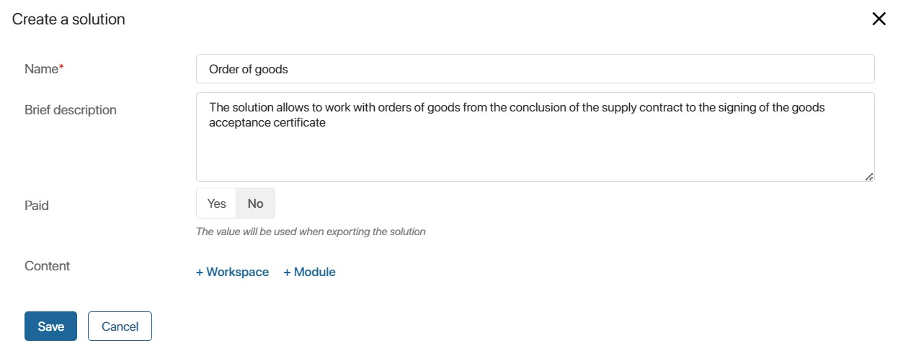
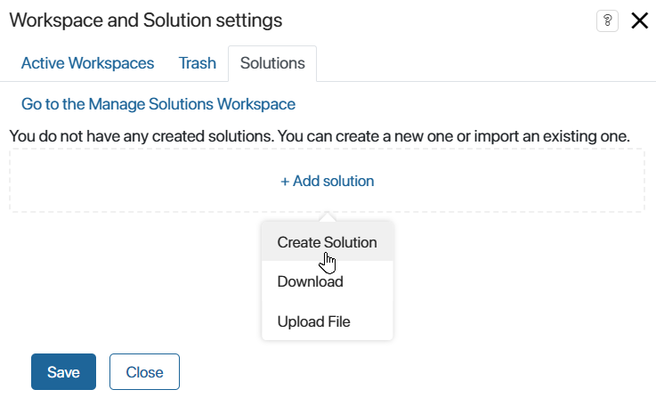
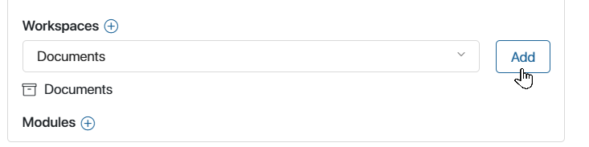
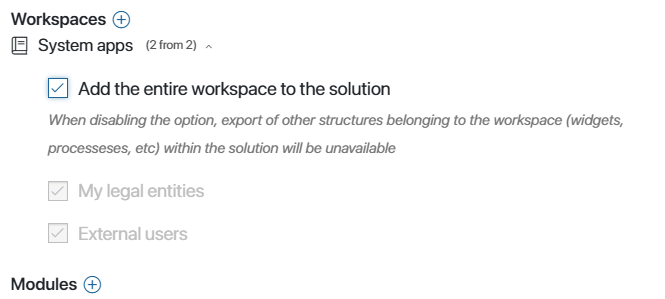
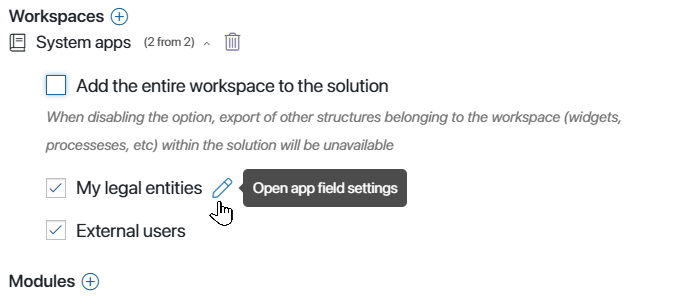
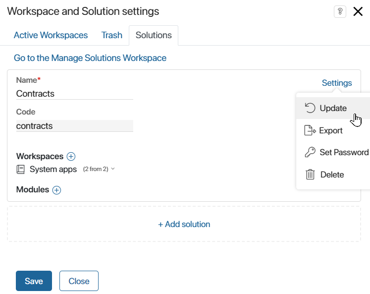

A newly-created solution can include custom modules as well as custom and system workspaces, such as System apps.
Each custom workspace or module can be included in only one solution. This will help avoid errors when exporting the solution later. At the same time, a single system workspace can be added to multiple solutions, as such a workspace is installed by default in every company.
Please note, that before exporting the solution, you can enable the option to add properties to the forms of a locked app within it. To do this, configure the app context extension.
Read more about the process of building custom solutions in Build solutions in BRIX.
To add a new solution, follow these steps:
Step 1. Create a solution
- On the Administration > Manage Solutions page, click +Solution in the upper right corner and select Create in the opened window. Then on the opened form, specify the name and description of the solution; you can enable the Paid option. Please note, that in the future when exporting the solution, this data will be automatically added to the export form.

- On any page of the system in the left menu, click the icon
 , and in the opened window go to Solutions. Then click +Add solution and select Create Solution. Then specify the name and click Create Solution.
, and in the opened window go to Solutions. Then click +Add solution and select Create Solution. Then specify the name and click Create Solution.

Step 2. Add workspaces to the solution
To do this, click +Workspace in the opened form. The list will show all system workspaces, as well as those custom workspaces that are not included in other solutions. Select a workspace and click Add.

Each custom workspace can be part of only one solution. The solution will include all components of the added workspace: apps, pages, separators, links, business processes, etc.
Add system workspaces
You can add all the components of a system workspace to a solution, or select specific apps:
- Add a system workspace entirely. All apps, as well as business processes and widgets associated with the workspace, will be included in the solution. When exporting the workspace as part of a solution, all of its components will be exported.
Note that a system workspace can only be fully added to one solution. It is not possible to create or import another solution with the same workspace added in full. This helps to prevent duplication of identical components within the company.

- Select individual apps from the system workspace to include in the solution. To do this, disable the option to Add the entire workspace to the solution. Note that if there is a custom app in the system workspace, it can only be added to one solution.
The selected app will be included in the workspace with both system and custom fields. You can choose specific custom fields and include them in the app's context. To access the settings, click the pencil icon next to the app's name.

When exporting a workspace as part of a solution, only the selected apps with specified custom fields, along with processes and widgets associated with the app, will be exported.
If, after selecting apps and fields, you enable the option to Add the entire workspace to the solution, the selection settings will be reset.
Step 3. Add modules to the solution
Include custom modules in the solution. To do this, click +Module or the plus icon next to Modules, then select a module from the list.
Each module can be added to only one solution. In this case, the solution will include all module components: parameters, widgets, API methods, business process activities, event handlers etc.
Please note, that after importing into another company, you can edit the module that is included in the free solution.
Actions with the created solution
After completing all the steps, save the settings. The solution is ready.
Now you can export it, set a password, delete, edit or update it. To do this, click Settings next to the solution name in the list and select the appropriate action.

Found a typo? Select it and press Ctrl+Enter to send us feedback